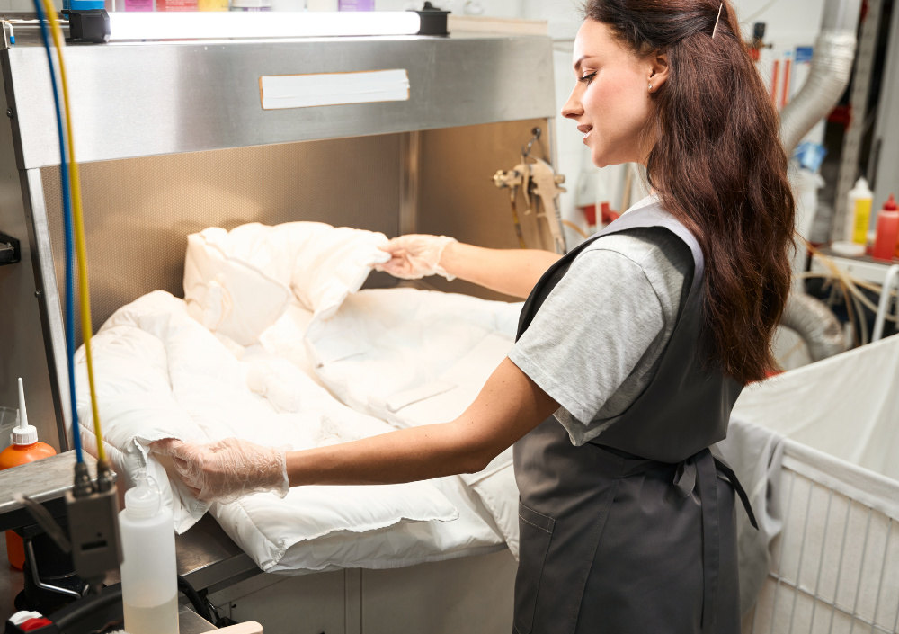

Lupa Cleaning Blog · Home Cleaning Guides
10 Essential Tips to Keep Your Home Clean Every Day
A practical, habit-based guide that shows how small daily actions, the right products, and a simple routine can keep your home consistently clean without burnout.

Keeping your home clean doesn’t have to mean spending your entire weekend scrubbing floors and scrubbing bathrooms. The real secret is to build small daily habits, use the right tools, and follow a simple but consistent routine that works with your lifestyle.
In this guide, we’ll walk through 10 essential tips that combine professional cleaning strategies with realistic everyday habits. You’ll see exactly how to apply each tip in your day-to-day life, which products to use, and how to maintain a home that looks and feels clean all the time.
1. Start With Organization — the Foundation of a Clean Home
A tidy home always looks cleaner, even before you begin cleaning. Visual clutter like toys, mail, shoes, and chargers creates the feeling of a dirty home, even if surfaces are technically clean.
How to put this into practice
- Spend 5 minutes every morning putting things back where they belong.
- Use baskets or bins in living areas for remotes, toys, blankets, and small items.
- Place a tray or small organizer near the entrance for keys, wallets, and mail.
Over time, these tiny actions drastically reduce the amount of “stuff” sitting on counters and furniture, making every room look instantly neater.
Pro tip: Follow two rules: “take it out, put it back” and “if it enters the house, it gets stored immediately.” These alone can cut your daily clutter in half.
2. Clean by Zones Instead of Trying to Clean Everything at Once
One of the biggest reasons people feel overwhelmed by cleaning is trying to handle the entire home in a single day. A much more efficient approach is to divide your home into zones and work on one zone at a time.
Example weekly zone schedule
- Monday: Kitchen
- Tuesday: Bathrooms
- Wednesday: Bedrooms
- Thursday: Living room & common areas
- Friday: Laundry room & small details
By focusing on one area per day, you avoid burnout and still keep the entire home under control throughout the week. The goal is progress and consistency, not perfection in one single marathon cleaning day.
3. Don’t Let Dishes Pile Up — Protect Your Kitchen From Chaos
Dirty dishes are one of the fastest ways for a clean home to feel messy. They attract bacteria, create odors, and make cooking and cleaning around the kitchen much harder.
Daily dish routine
- Wash as you cook so pots and utensils don’t pile up.
- Place plates and cups straight into the dishwasher after each meal.
- Make it a non-negotiable rule: the sink is empty before bed.
Recommended products (U.S.)
- Dawn Ultra for powerful grease removal.
- Scrub Daddy sponges for long-lasting, scratch-free scrubbing.
- Finish Powerball tablets for dishwashers.
Pro tip: For stuck-on food, fill the pan with hot water and a drop of dish soap, let it sit for 10–15 minutes, then wash. Most residue will come off with almost no scrubbing.
4. Use Microfiber Cloths — Your Secret Weapon for Faster Cleaning
Microfiber cloths are one of the most effective tools you can use. They trap dust instead of just moving it around, don’t scratch surfaces, and often require less cleaning product.
How to use microfiber the right way
- Assign different colors to different areas (bathroom, kitchen, dusting).
- Use them dry for dusting and damp for wiping down surfaces.
- Wash them separately from cotton towels to maintain their performance.
Popular and reliable options
- Amazon Basics Microfiber Cloths for everyday use and great value.
- E-Cloth for deep cleaning; they can remove up to 99% of bacteria using just water.
5. Vacuum More, Sweep Less
Traditional sweeping often just pushes dust around. Vacuums, especially those with HEPA filters, actually remove dust, allergens, pet hair, and fine particles from your home.
Practical vacuum routine
- Do a quick vacuum pass through the kitchen and main living areas once a day.
- Use a handheld vacuum for crumbs on furniture, stairs, and corners.
- Vacuum sofas, mattresses, and curtains at least once a week.
Popular vacuum options
- Shark Navigator – great suction and reliability.
- Dyson V8/V10 – cordless and extremely convenient for daily use.
- Bissell Featherweight – budget-friendly and lightweight.
6. Disinfect High-Touch Surfaces Regularly
Items like light switches, door handles, remote controls, faucet handles, and fridge doors are some of the dirtiest surfaces in your home, even if they look clean.
Suggested disinfection routine
- Wipe high-touch points at least three times per week.
- Increase to daily disinfection when someone in the home is sick.
Common disinfectant products
- Lysol Disinfectant Spray
- Clorox Disinfecting Wipes
- Microban 24 for longer-lasting protection.
7. Make the Bathroom a Daily Priority
Bathrooms accumulate moisture, germs, and odors quickly. A few small daily habits can keep them fresh and reduce the need for heavy scrubbing later.
Daily bathroom habits
- Spray shower walls or glass with a bathroom cleaner after showers to prevent soap scum.
- Wipe down the sink and faucet with paper towel and disinfectant.
- Replace bath mats every 2–3 days, especially in high-traffic homes.
- Always close the toilet lid before flushing to reduce bacteria in the air.
Weekly deep-clean focus
- Scrub grout and corners with a firm brush and appropriate cleaner.
- Use gel toilet cleaners (such as Scrubbing Bubbles) for the bowl.
- Wash shower doors and tiles with a soap scum remover.
8. Change Your Bedding Weekly
Your bed collects sweat, skin cells, oils, and dust mites every single night. Regularly changing and washing bedding is essential for both cleanliness and health.
Healthy bedding habits
- Rotate between 2–3 sheet sets per person.
- Use protective covers on mattresses and pillows to reduce allergens.
- Wash duvets and comforters every 2–3 weeks, or more frequently if you have allergies.
Pro tip: Wash sheets in hot water with a quality detergent such as Tide and add Borax to help kill bacteria and dust mites more effectively.
9. Use the Right Products for Each Surface
Not all cleaning products are safe for every type of surface. Using the wrong cleaner can cause discoloration, streaks, or even permanent damage.
Quick product guide by surface
- Granite & stone: pH-neutral cleaners only.
- Wood: gentle wood cleaners like Murphy’s Oil Soap.
- Glass & mirrors: ammonia-free glass cleaners to avoid streaks.
- Stainless steel: products like Bar Keepers Friend for polished finishes.
- Bathrooms: hydrogen peroxide–based cleaners for effective disinfection.
Where to buy
- Walmart
- Target
- Home Depot
- Amazon
- Dollar Tree (for basic tools and supplies)
10. Build a Simple, Consistent Cleaning Routine
A consistently clean home is the result of repeated, manageable habits — not random bursts of energy. The goal is to design a routine that fits your reality and stick to it.
Sample easy-to-follow routine
Daily:
- Make beds.
- Keep the kitchen sink empty and wiped.
- Change dishcloths and take out small trash if full.
- Do a quick vacuum of high-traffic areas.
Weekly:
- Clean bathrooms thoroughly.
- Dust surfaces.
- Change bedding.
- Mop hard floors.
Monthly:
- Deep-clean the fridge.
- Clean the oven.
- Wash windows (inside).
- Wipe down shelves and inside cabinets.
Conclusion
A clean home is not about perfection — it is about consistency. When you combine simple habits, effective products, and a realistic routine, keeping your home clean becomes easier, faster, and far less stressful.
Start with one or two tips from this guide, build them into your daily life, and then gradually add more. Within a few weeks, you’ll notice that your home not only looks cleaner, but feels calmer and more organized every day.